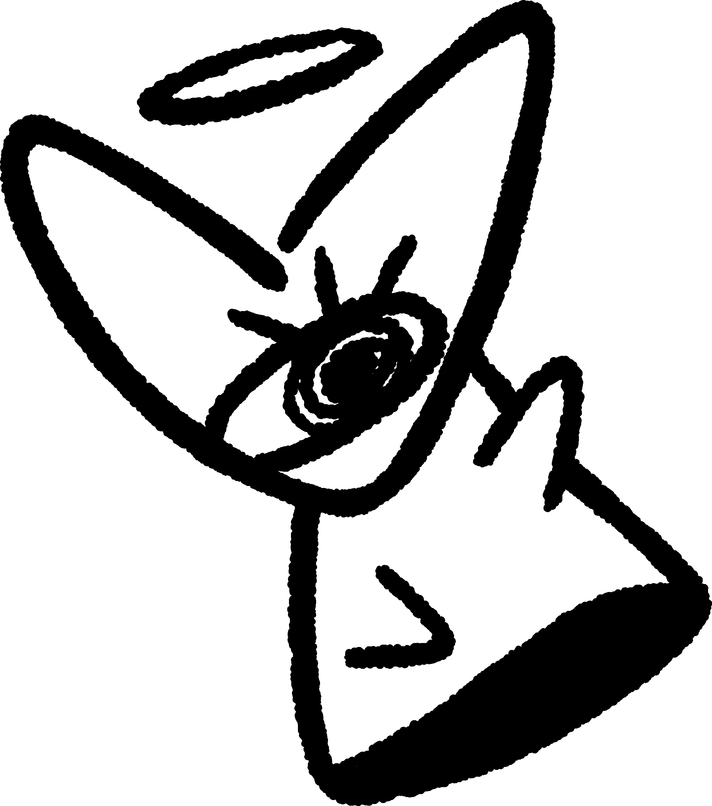
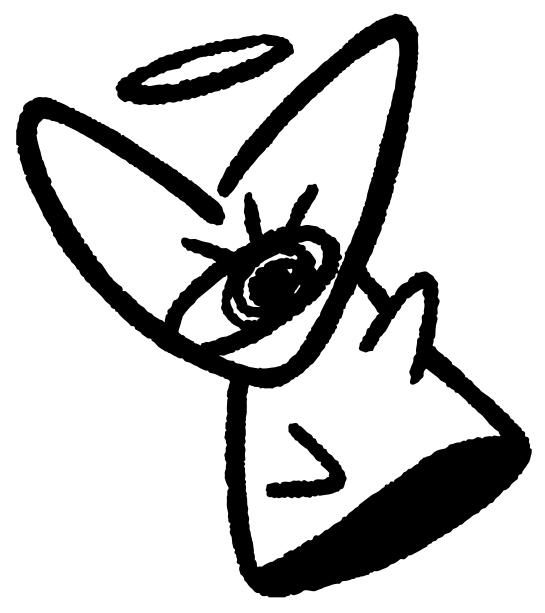
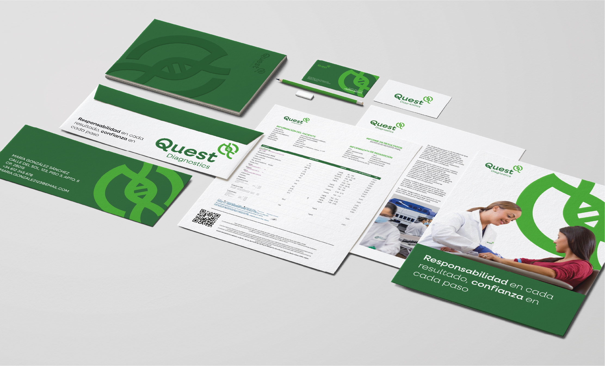
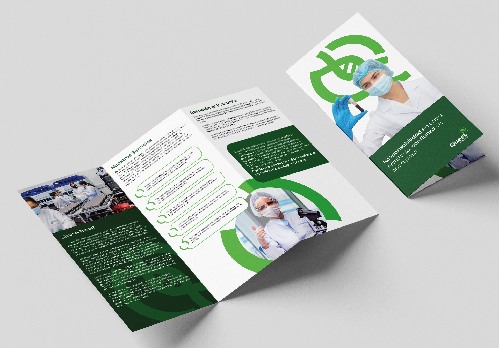
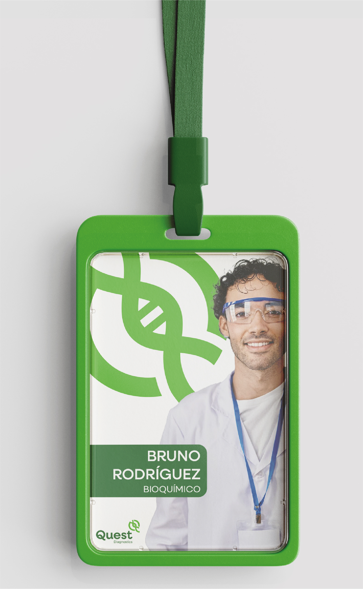

surface-card
#FFFFFF
Blanco puro de galerías, miniaturas y tarjetas de marcas. Contrasta suavemente con el fondo de la página.
Sistema de diseño · v1.3
Composición editorial abierta, tipografía de carácter, base clara y acentos de color medidos. Aquí se muestra cómo conviven la tipografía, los colores, el ritmo y los componentes. El personaje es una pieza personal; los proyectos conservan su propia identidad.


01 — Color
El fondo es surface y el texto primary. Los bloques oscuros usan surface-dark. Cada zona mantiene un solo acento dominante. Los colores oscuros se reservan para bloques puntuales, no para otro modo de la página.
surface-card
#FFFFFF
Blanco puro de galerías, miniaturas y tarjetas de marcas. Contrasta suavemente con el fondo de la página.
primary · on-surface
#0C0C0C
Tinta profunda para titulares y texto principal sobre fondos claros. Texto sobre superficies claras.
on-primary · on-tertiary · surface · on-surface-dark
#F4F4F4
Lectura sobre tinta profunda y sobre el botón principal. Texto sobre el azul de acción. Base de la página y de las superficies claras; la base neutra del sistema. Texto sobre bloques oscuros.
secondary
#4F4F4F
Texto secundario oscuro y bordes de 1 px en controles.
tertiary
#105EF9
Azul de enlaces y de algunas acciones. Único acento de navegación.
surface-dark · on-surface-muted
#222222
Superficie de bloques oscuros. Texto sobre etiquetas y superficies atenuadas.
surface-raised
#393939
Nivel intermedio y estado presionado del botón principal.
surface-muted
#DADADA
Etiquetas y separadores sobre fondos claros.
text-muted-dark
#BFBFBF
Texto secundario sobre superficies oscuras.
accent-graphic
#0000F4
Azul con papel gráfico sobre claros. No se usa en texto pequeño.
accent-detail
#EF1889
Rosa de detalle ocasional. Nunca es un segundo color de navegación.
| Par de colores | Muestra | Relación | Resultado |
|---|---|---|---|
| Calculando… | |||
La página usa una sola base clara. El bloque oscuro muestra cómo se leen los tonos de contraste cuando se aplican en un componente puntual.
Base clara
Fondo surface #F4F4F4
Lectura on-surface #0C0C0C
Secundario secondary #4F4F4F
Enlaces tertiary #105EF9
Bloque oscuro
Fondo surface-dark #222222
Lectura on-surface-dark #F4F4F4
Secundario text-muted-dark #BFBFBF
Enlaces on-surface-dark subrayado
02 — Tipografía
DM Sans concentra la fuerza del nombre y los titulares. Manrope sostiene la lectura, los metadatos y las etiquetas. Ambas son variables y están preparadas para uso web.
Titulares · navegación · botones
Lectura · metadatos · etiquetas
display-xl
DM Sans 700 · 80/80 · −2 px · móvil 44/46 · −1 px
Aldo Iván
section
DM Sans 700 · 48/52 · −1 px · móvil 32/36 · −1 px
Proyectos seleccionados
project
DM Sans 700 · 28/32 · 0 · móvil 24/28
TipoFilicko
subtitle
DM Sans 500 · 20/26 · −1 px
Diseño gráfico y movimiento
body
Manrope 400 · 18/28 · móvil 16/25
La composición editorial, la tipografía de carácter y los detalles de cristal provienen del sistema de diseño.
nav
DM Sans 500 · 16/20
Proyectos · Sobre mí · Contacto
meta
Manrope 400 · 14/20
Branding · Campañas · Motion Graphics
label
Manrope 500 · 14/20
Etiqueta de filtro
note
Manrope 400 · 12/16
Nota auxiliar: nunca contiene información esencial.
Las variantes móviles son tokens propios: display-xl-mobile, section-mobile, project-mobile y body-mobile.
03 — Retícula
Base de 4 px. Contenedor del portafolio de 1296 px, con hasta 1200 px útiles. Las 12 columnas son una referencia editorial; las galerías usan dos zonas 42/58, con 32 px entre ellas, y pasan a una columna en móvil.
12 columnas · 24 px de calle
04 — Profundidad
El cristal se reserva para la navegación y las acciones flotantes. Las fotografías, los proyectos y los formularios conservan superficies sólidas.
Controles y muestras: 160–220 ms. Galerías: fundido de 380 ms; zoom: 240 ms; entrada de secciones: 550 ms. El portafolio permite pausar los ciclos continuos y respeta la preferencia de movimiento reducido.
05 — Forma
Los redondeos se concentran en controles y capas flotantes. Las imágenes conservan una geometría más contenida para mantener el carácter editorial.
none · 0 px
Portadas a sangre
sm · 4 px
Portadas e imágenes
md · 12 px
Botones y campos
lg · 16 px
Navegación y contenedores
xl · 20 px
Modales
full · píldora
Etiquetas, filtros y controles de ícono
06 — Piezas
La portada, el índice y las galerías constituyen los componentes activos. Los botones generales, campos, filtros y modal que siguen son muestras de reserva, no funciones publicadas en la landing.
aldo iván
Nombre en DM Sans Extralight en reposo; cada letra reacciona al cursor con pesos máximos progresivos de 200 a 900. El personaje se sitúa arriba, seguido del nombre, «diseñador gráfico» y la frase en tres líneas.
me gusta entender
una idea antes de
darle forma
La frase parte de Light; idea y forma llegan a Bold, sin cursiva. Solo reacciona la fila cercana al cursor. Probar la interacción en la portada.



Marcos blancos de radio 20 px, sin contorno; miniaturas sobre un soporte opaco del color del fondo. El logo se muestra completo. Los mockups llenan el marco y admiten zoom y arrastre. Las miniaturas avanzan automáticamente y se pueden recorrer con el trackpad.
Explorar Quest · Explorar TipoFilicko. Flechas y zoom: círculos de 38 px. Cambio de imagen: fundido de 380 ms con el encuadre resuelto desde el inicio.
El índice oscuro enlaza las tres áreas con tarjetas móviles; al señalar una, las demás se desenfocan y el movimiento se ralentiza. Las franjas de marcas usan fondo claro, tarjetas blancas y las palabras branding o campañas en azul, con un desvanecido de 25 px alrededor del grupo. Pausar detiene estos ciclos y las miniaturas.
Etiquetas y filtros: fondo surface-muted, texto on-surface-muted, forma de píldora.
En fondo claro el enlace usa tertiary y se reconoce por el subrayado, no solo por el color.
Sobre fondo oscuro se mantiene claro y subrayado; el azul no se usa en texto pequeño.
Contorno azul de 2 px sobre claro y contorno claro sobre oscuro.
Solo se usa para responderte. Nunca sustituye a la etiqueta.
El correo no está completo. Revisa el dominio.
Mi personaje me representa; no es una marca de cliente. Su presencia es libre, sin marco ni tratamiento de tarjeta de proyecto.
Superficie oscura sólida, texto claro y radio de 16 px.
Los modales son opacos, con radio de 20 px y un velo negro al 40 % detrás.
07 — Criterio
Las reglas que protegen el carácter del sistema y evitan que los efectos compitan con los proyectos.